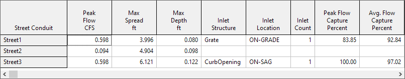

Depressed gutters can increase inlet capture (due to higher cross slope) and reduce pavement spread (due to the increased volume next to the curb). We will illustrate this effect by adding a depressed gutter to the streets in our example project. We do this by editing the StreetSect1 cross section, giving it a 0.167 foot (2 inch) gutter depression that is 2 feet wide (refer to Step 3 of the project's workflow on how to access the Street Section Editor). |
|

After making this change and re-running the analysis we can compare depressed gutter results to those with no depressed gutter:
Results With No Gutter Depression

Results With Gutter Depression

Gutter depression has significantly reduced the amount of spread seen by Street2 and Street3. It has also allowed the Grate inlet to completely capture all of the flow in Street1. (Even though Street2 sees no flow from Street1 it still contains some water backed up from the sag node at its downstream end.)